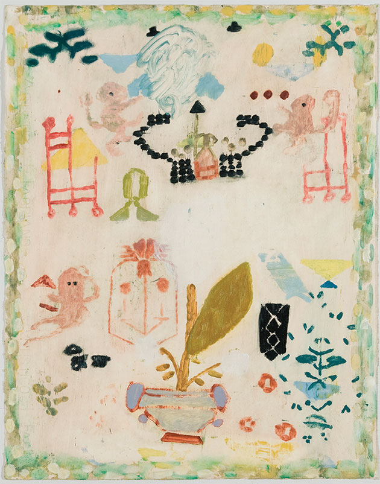

Clare Grill
Samplers
Oil on paper, 15 x 19", 2012
I’ve recently been looking at antique samplers, small, embroidered pieces of fabric made by young girls to display their proficiency in the crafts of needlepoint and embroidery. Typically they had a decorative border, letters and numbers to show monogramming skills, little pictures, the girl’s name and age, (as young as 5), and often a prayer about death and saving her soul. They were used by the children to get domestic jobs and then were handed down as family heirlooms displaying talent and virtue. They’re serious in craft and content, though the work of little fingers, so heavy in their smallness. They speak of tradition, of obedience, of fear, of femininity, of domesticity, of lost youth. These paintings are inspired by them.
Amanda

Anne K
